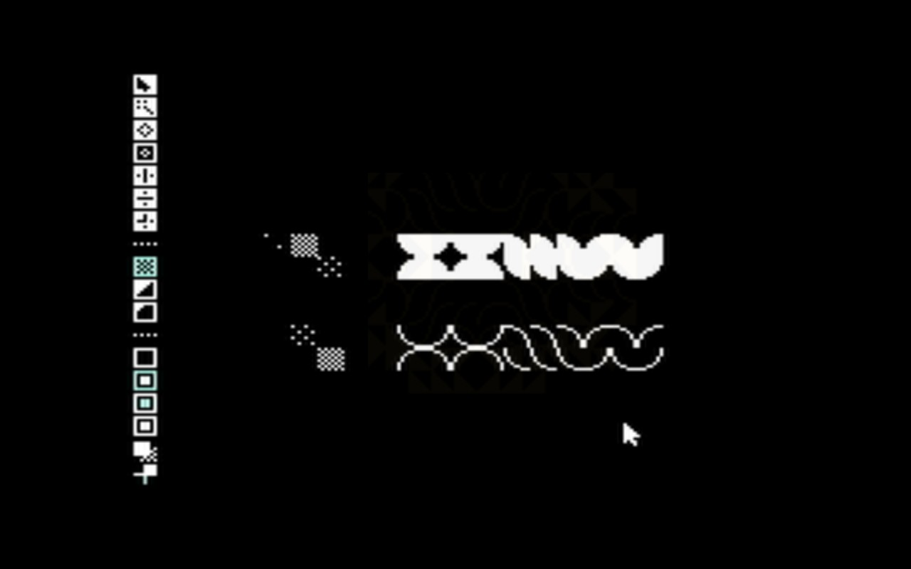

20K10 — Pino in Shimoda20K03 — The NesPaint Interface20J11 — Andes Castel In Construction20I13 — Nozoe at 5am20I12 — Zoe Suit 0.120I09 — Luna moth in Minamiise20H12 — Spiral Pattern20H06 — Entaloneralie System 720H03 — The Gokashou Coast20G10 — Neauismetica Stack III20G09 — Neauismetica Stack II20G08 — Neauismetica Stack I20F14 — Nasu running in Surf20F08 — Nakatsuhamaura20F07 — Acorn BBC Micro Logo on Famico20F03 — Famicom AV to C1084 Monitor20F02 — In Minamiise20C05 — Nasu Interface20B10 — XXIIVV in NesPaint20A01 — Famicom Keyboard19Y09 — Aboard Pino